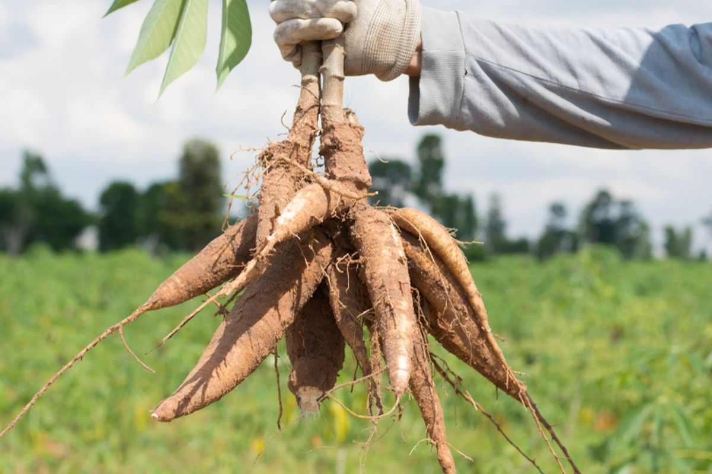

Kingdom : Plantae
Divisi : Spermatophyta
Kelas : Dicotyledoneae
Ordo : Euphorbiales
Famili : Euphorbiaceae
Genus : Manihot
Spesies : Manihot utilissima crantz
Sejarah Tanaman Singkong
Singkong, tanaman yang erat dengan nilai kesederhanaan diperkirakan berasal dari Amerika Latin. Menurut Haryono Riyadi, dalam buku Politik Singkong Zaman Kolonial, singkong masuk ke Indonesia dibawa oleh Portugis ke Maluku sekitar abad ke-16. Pada tahun 1810, untuk pertama kalinya singkong ditanam secara komersial di Indonesia. Pada permulaan abad ke-20, konsumsi singkong mulai meningkat pesat, penanamannya pun turut meluas hingga hamper ke seluruh bagian pulau Jawa. Memiliki nama Latin Manihot Utilissim, singkong merupakan jenis tanaman umbi-umbian, juga dikenal sebagai ketela pohon atau ubi kayu dan menjadi sumber bahan pangan tambahan yang disukai hingga saat ini, tidak hanya di Indonesia, tetapi juga di dunia.
Pada periode 2018-2022, sentra produksi ubi kayu terdapat di tujuh
provinsi di Indonesia. Provinsi sentra utama adalah Lampung dengan kontribusi
sebesar 39,74% dari total produksi ubi kayu Indonesia atau sebanyak 5,95 juta ton
di tahun 2022. Provinsi sentra lainnya adalah Jawa Tengah, Jawa Timur, Jawa
Barat, Sumatera Utara, DI Yogyakarta, dan Nusa Tenggara Timur. Dan sebesar
12,71% produksi ubi kayu Indonesia tahun 2022 disumbang oleh provinsi lain.
Di Indonesia, ketela pohon menjadi makanan bahan pangan pokok setelah beras dan jagung. Manfaat daun ketela pohon sebagai bahan sayuran memiliki protein cukup tinggi, atau untuk keperluan yang lain seperti bahan obat-obatan. Kayunya bisa digunakan sebagai pagar kebun atau di desa-desa sering digunakan sebagai kayu bakar untuk memasak. Dengan perkembangan teknologi, ketela pohon dijadikan bahan dasar pada industri makanan dan bahan baku industri pakan. Selain itu digunakan pula pada industri obat-obatan.
Persentase Produksi

Manfaat Singkong